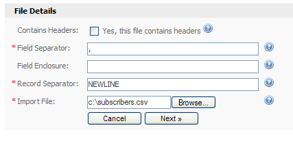
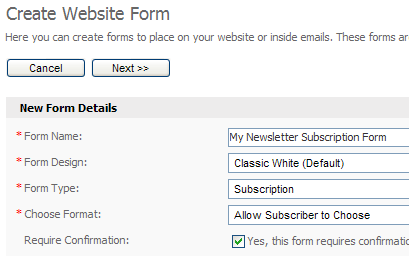

Sending your first email campaign
Sending your first email campaign is a simple task but requires some initial setup before we can proceed. Follow the simple steps below and you'll be sending your first email campaign in no time.
Step 1. Create your contact list
A contact list is a collection of your contacts details. It includes their email address and any optional fields such as Name, Age and Sex which you can create. When sending out an email newsletter, you send it to a contact list which means everyone on that list will receive the email.
To create a contact list, click the "Create a Contact List" option under the "Contact Lists" tab.
Note that your administrator may have already created a contact list for you. To check to see if a contact list already exists, click on the "View Contact Lists" option from the menu options.
Step 2. Create custom fields (optional)
Custom fields allow you to collect extra information about your contacts, such as Name, Age, Sex, Country, etc. You can create as many custom fields as you like and you can use them in the content of your newsletter.
Custom fields need to be created before you create your subscription form as they are included as fields that can be filled in by your web site visitors along with their email address. More on this later.
To create a custom field, click the "View Custom Fields" option under the "Contact Lists" tab.
Step 3. Add/import contacts
Before you can send a newsletter you need someone to send it to. In step 1 we created a contact list. In this step we will look at 3 different ways you can add contacts to your contact list:
-
Import contacts from a file
If you already have a list of contacts in a file on your computer, you can upload that file into the system and add the contacts to your new contact list. To start, you will need to export your contact list from your other mailing program. You should export your contact list into a CSV (comma separated value) file. A CSV file will contain a list of your contacts details in a line-by-line format, such as:
user1@site.com,MALE,Y,20030101
user2@site.com,FEMALE,N,20031014
user3@site.com,MALE,N,20020706
Move your mouse over the "Contacts" tab and click the "Import Contacts" option, as shown below:

To import contacts from a file, click the "Import Contacts" option under the "Contacts" tab.
This will start the "Import Contacts" wizard. Choose the contact list you want to import contacts to and click the "Next >>" button.
The example import file above includes three records, and each record is separated with a new line. Each record contains four fields, and each field is separated with a comma. The CSV file will typically have a .CSV or .TXT file extension. Start by clicking on the "Browse..." button in the form to select your CSV file from your hard drive:

To import contacts from a file, click the "Browse..." button to choose the file.
If your import file contains a line of headers like this:
EMAIL,SEX,EMPLOYED,DATE
user1@site.com,MALE,Y,20030101
user2@site.com,FEMALE,N,20031014
user3@site.com,MALE,N,20020706
...
... make sure you tick the "Yes, this file contains headers" checkbox. Click the "Next >>" button to proceed to the next step.
You will now be asked to map the fields from the imported file to the fields in the system. Simply click the dropdown box next to each field that was found in the file and match it up to the field in the system. Here's an example for an import file that included "Sex" and "Age" custom fields:

Click the dropdown next to each imported field to map it to the appropriate field in the system.
Click the "Next >>" button when you are done. Finally, click the "Start Import" button. Your contacts will be imported one by one and the popup window that appears will show you how many contacts have been imported and how many remain. You will see a final report when all contacts have been imported:

The final screen will tell you how many contacts were imported. It will also tell you if your contact file contained bad data. -
Type in contacts manually
If you only have a handful of contacts to add to your list, you can use the "Add Contact" form to add them in manually. Move your mouse over the "Contacts" tab and click the "Add Contact" menu option:

To add contacts by typing them in, click the "Add a Contact" option under the "Contacts" menu.
Choose a contact list to add contacts to and click the "Next >>" button. Fill out the form by typing in their email address and values for any custom fields you've created for the contact list.

Complete the form to add a contact to the selected contact list.
When you're done, click "Save" to save the contact to the contact list and add another contact. Clic "Save And Exit" to add the contact and return to the main page of the system.
-
Create a subscription form for your web site
If you want to offer visitors to your web site a way to sigup to your contact list, you can create a subscription form in the system to add to your site. You will need to have a little experience with HTML to add the form to your web site.
To get started, click the "Website Forms" link shown in the top right-hand corner of the system. This will take you to the "Manage Website Forms" page. Website forms are special forms that you can create. You can create website forms to accept contacts, for someone to unsubscribe, modify their subscription details or send an email campaign to their friends.
Click the "Create Form" button to create a form. Type in a form name and make sure you choose the "Subscription" option from the "Form Type" dropdown. If you aren't sure what any of the fields are, just move your mouse over the help icon next to that field:

Creating a form to accept contacts from your web site is easy.
Click the "Next >>" button. Depending on which form options you chose, you may or may not be required to enter more details. Again, if you are unsure of anything just move your mouse over the help icon next to the field and read the help text.
Once you've created your form you'll be taken back to the "Manage Website Forms" page. Simply click the "Get HTML" link next to your new form and paste that code into your website to add the subscription form to your site.
The most important part of your campaign is the email you will send to your contact list. Let's now look at how to create a simple email campaign by choose a professionally pre-designed email template from those included in the system.
Move your mouse over the "Email Campaigns" tab and click the "Create Email Campaign" menu option:
Creating a simple email campaign in the system.
Complete the "Create Email Campaign form". Choose "HTML" for the format. In this example we will create a basic HTML-only newsletter with graphics and formatted text. Finally, choose one of the professionally pre-designed email templates from the "Email Template" box. Use the preview link to view all of the templates. Click the "Next >>" button when you're done.
Creating an email campaign using one of the many included professionally designed email templates in the system.
When the next page loads, type in a subject line for your email campaign. This is the text contacts will see when they look at the emails in their inbox, so make it short and to the point. Scroll down the page and you will see the email editor. You can type in text content for your email here. In this example we'll just copy and paste a few paragraphs of text from Microsoft Word using the editor's "Paste From Word" function:
Creating the content of your email using the built-in WYSIWYG editor.
Under the email editor you will see two links: Insert Custom Fields and Insert Unsubscribe Link. You should always include an unsubscribe link in your email, and if you don't the system will warn you when it saves.
To insert the value of a custom field in your newsletter just click the "Insert Custom Fields" link:

Inserting a custom field into your email campaign's content.
Choose the custom field you want to add and click the "Insert" button next to it. The custom field will be added to your content and will be represented by a placeholder varaible, such as %%Email%% or %%First Name%%. When the email is sent, these values will be replaced with real values from your contact contact list. For example, %%Email%% might be replaced with user1@somesite.com and %%First Name%% might be replaced with John.
Complete the "Attachments" section of the form if you want to include file attachments with your email campaign. Before clicking the "Save And Exit" button to move on, send a preview of your email using the "Send Preview" section of the form.
Congratulations, you've just created your first email campaign! Let's now move on to send it to your contact list of contacts.
Congratulations, you've just created your first email campaign!
Step 5. Send your email campaign
Sending your email campaign in the system is easy. Let's look at how to send a campaign straight away using the build in popup window sending system. If your administrator has setup scheduled sending you can also use that too.
To send your campaign click the "Send an Email Campaign" link under the "Email Campaigns" menu:
Sending an email campaign using the popup window method
When the page loads choose the contact list you want to send your campaign to. For this example, uncheck the "Yes, show filtering options on the next page" checkbox. That's an advanced option and isn't needed when you're just getting started. Click "Next >>" to continue.
On the next step choose the email campaign you want to send from the dropdown list and leave all pre-selected options as they are and click "Next >>". The default options of tracking links and notifying the owner by email are fine. You can change any form options if you like.
Getting ready to send an email campaign using the popup window method
Finally, click the "Start Sending" button to send the email campaign to your contacts.
Sending an email campaign using the popup window method
When the window closes, the email has been sent to all contacts in the contact list. Check your inbox too, because as the owner of the list you will receive a notification that the campaign has just finished sending.
Congratulations, you've just created and sent your first email campaign!